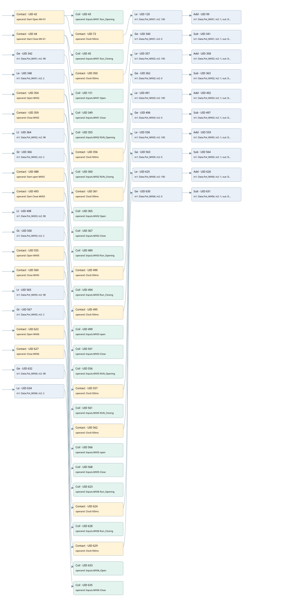

mv
simulation · 검색 색인 순서 5 · 원본 내부 NID 추정 2
백업 PLF 원본의 2993682 바이트 위치에서 복원한 XML. 검색 문서 1083의 객체 키 161022006c28000000000000와 연결했다. 이름 해석 110/110개. 남은 RefId는 상수 또는 미해석 참조다.
연결 구조 다시 그리기
원본 Part/PCon/Wire를 이용한 연결도다. TIA 화면의 래더 배치 또는 실행 결과를 재현한 그림은 아니다. 핀 연결은 아래 표와 원본 XML을 기준으로 읽는다. 노드 위에 마우스를 두면 피연산자 이름을 볼 수 있다.

접점·코일·블록과 피연산자
| Part UID | Gate | Negated 핀 | 연결 피연산자 |
|---|---|---|---|
| 42 | Contact | operand = Start Open MV-01 | |
| 43 | Coil | operand = Inputs.MV01 Run_Opening | |
| 72 | Contact | operand = Clock100ms | |
| 120 | Le | in1 = Data.Pot_MV01; in2 = 100 | |
| 99 | Add | in1 = Data.Pot_MV01; in2 = 1; out = Data.Pot_MV01 | |
| 44 | Contact | operand = Start Close MV-01 | |
| 45 | Coil | operand = Inputs.MV01 Run_Closing | |
| 350 | Contact | operand = Clock100ms | |
| 340 | Ge | in1 = Data.Pot_MV01; in2 = 0 | |
| 341 | Sub | in1 = Data.Pot_MV01; in2 = 1; out = Data.Pot_MV01 | |
| 342 | Ge | in1 = Data.Pot_MV01; in2 = 98 | |
| 151 | Coil | operand = Inputs.MV01 Open | |
| 348 | Le | in1 = Data.Pot_MV01; in2 = 2 | |
| 349 | Coil | operand = Inputs.MV01 Close | |
| 354 | Contact | operand = Open MV02 | |
| 355 | Coil | operand = Inputs.MV02 RUN_Opening | |
| 356 | Contact | operand = Clock100ms | |
| 357 | Le | in1 = Data.Pot_MV02; in2 = 100 | |
| 358 | Add | in1 = Data.Pot_MV02; in2 = 1; out = Data.Pot_MV02 | |
| 359 | Contact | operand = Close MV02 | |
| 360 | Coil | operand = Inputs.MV02 RUN_Closing | |
| 361 | Contact | operand = Clock100ms | |
| 362 | Ge | in1 = Data.Pot_MV02; in2 = 0 | |
| 363 | Sub | in1 = Data.Pot_MV02; in2 = 1; out = Data.Pot_MV02 | |
| 364 | Lt | in1 = Data.Pot_MV02; in2 = 98 | |
| 365 | Coil | operand = Inputs.MV02 Open | |
| 366 | Gt | in1 = Data.Pot_MV02; in2 = 2 | |
| 367 | Coil | operand = Inputs.MV02 Close | |
| 488 | Contact | operand = Start open MV03 | |
| 489 | Coil | operand = Inputs.MV03 Run_Opening | |
| 490 | Contact | operand = Clock100ms | |
| 491 | Le | in1 = Data.Pot_MV03; in2 = 100 | |
| 492 | Add | in1 = Data.Pot_MV03; in2 = 1; out = Data.Pot_MV03 | |
| 493 | Contact | operand = Start Close MV03 | |
| 494 | Coil | operand = Inputs.MV03 Run_Closing | |
| 495 | Contact | operand = Clock100ms | |
| 496 | Ge | in1 = Data.Pot_MV03; in2 = 0 | |
| 497 | Sub | in1 = Data.Pot_MV03; in2 = 1; out = Data.Pot_MV03 | |
| 498 | Lt | in1 = Data.Pot_MV03; in2 = 98 | |
| 499 | Coil | operand = Inputs.MV03 open | |
| 500 | Gt | in1 = Data.Pot_MV03; in2 = 2 | |
| 501 | Coil | operand = Inputs.MV03 Close | |
| 555 | Contact | operand = Open MV05 | |
| 556 | Coil | operand = Inputs.MV05 RUN_Opening | |
| 557 | Contact | operand = Clock100ms | |
| 558 | Le | in1 = Data.Pot_MV05; in2 = 100 | |
| 559 | Add | in1 = Data.Pot_MV05; in2 = 1; out = Data.Pot_MV05 | |
| 560 | Contact | operand = Close MV05 | |
| 561 | Coil | operand = Inputs.MV05 RUN_Closing | |
| 562 | Contact | operand = Clock100ms | |
| 563 | Ge | in1 = Data.Pot_MV05; in2 = 0 | |
| 564 | Sub | in1 = Data.Pot_MV05; in2 = 1; out = Data.Pot_MV05 | |
| 565 | Lt | in1 = Data.Pot_MV05; in2 = 98 | |
| 566 | Coil | operand = Inputs.MV05 open | |
| 567 | Gt | in1 = Data.Pot_MV05; in2 = 2 | |
| 568 | Coil | operand = Inputs.MV05 Close | |
| 622 | Contact | operand = Open MV06 | |
| 623 | Coil | operand = Inputs.MV06 Run_Opening | |
| 624 | Contact | operand = Clock100ms | |
| 625 | Le | in1 = Data.Pot_MV06; in2 = 100 | |
| 626 | Add | in1 = Data.Pot_MV06; in2 = 1; out = Data.Pot_MV06 | |
| 627 | Contact | operand = Close MV06 | |
| 628 | Coil | operand = Inputs.MV06 Run_Closing | |
| 629 | Contact | operand = Clock100ms | |
| 630 | Ge | in1 = Data.Pot_MV06; in2 = 0 | |
| 631 | Sub | in1 = Data.Pot_MV06; in2 = 1; out = Data.Pot_MV06 | |
| 632 | Ge | in1 = Data.Pot_MV06; in2 = 98 | |
| 633 | Coil | operand = Inputs.MV06_Open | |
| 634 | Le | in1 = Data.Pot_MV06; in2 = 2 | |
| 635 | Coil | operand = Inputs.MV06 Close |
접점 경로를 펼친 조건식
Contact·O/A·비교기의 원본 연결을 읽기 쉽게 펼친 보조 해석이다. POWER는 전원 레일 시작을 뜻한다. 호출 블록·에지·타이머의 내부 동작과 다중 쓰기 순서는 이 표로 실행 검증하지 않았다. 미해석 핀과 RefId는 원문 연결표에서 확인한다.
| UID | 동작 | 대상 | 원본 접점 경로 | 내용 |
|---|---|---|---|---|
| 43 | Coil | Inputs.MV01 Run_Opening | Start Open MV-01 | 조건에 따른 Coil 기록 |
| 45 | Coil | Inputs.MV01 Run_Closing | Start Close MV-01 | 조건에 따른 Coil 기록 |
| 151 | Coil | Inputs.MV01 Open | [Data.Pot_MV01 >= 98] | 조건에 따른 Coil 기록 |
| 349 | Coil | Inputs.MV01 Close | [Data.Pot_MV01 <= 2] | 조건에 따른 Coil 기록 |
| 355 | Coil | Inputs.MV02 RUN_Opening | Open MV02 | 조건에 따른 Coil 기록 |
| 360 | Coil | Inputs.MV02 RUN_Closing | Close MV02 | 조건에 따른 Coil 기록 |
| 365 | Coil | Inputs.MV02 Open | [Data.Pot_MV02 < 98] | 조건에 따른 Coil 기록 |
| 367 | Coil | Inputs.MV02 Close | [Data.Pot_MV02 > 2] | 조건에 따른 Coil 기록 |
| 489 | Coil | Inputs.MV03 Run_Opening | Start open MV03 | 조건에 따른 Coil 기록 |
| 494 | Coil | Inputs.MV03 Run_Closing | Start Close MV03 | 조건에 따른 Coil 기록 |
| 499 | Coil | Inputs.MV03 open | [Data.Pot_MV03 < 98] | 조건에 따른 Coil 기록 |
| 501 | Coil | Inputs.MV03 Close | [Data.Pot_MV03 > 2] | 조건에 따른 Coil 기록 |
| 556 | Coil | Inputs.MV05 RUN_Opening | Open MV05 | 조건에 따른 Coil 기록 |
| 561 | Coil | Inputs.MV05 RUN_Closing | Close MV05 | 조건에 따른 Coil 기록 |
| 566 | Coil | Inputs.MV05 open | [Data.Pot_MV05 < 98] | 조건에 따른 Coil 기록 |
| 568 | Coil | Inputs.MV05 Close | [Data.Pot_MV05 > 2] | 조건에 따른 Coil 기록 |
| 623 | Coil | Inputs.MV06 Run_Opening | Open MV06 | 조건에 따른 Coil 기록 |
| 628 | Coil | Inputs.MV06 Run_Closing | Close MV06 | 조건에 따른 Coil 기록 |
| 633 | Coil | Inputs.MV06_Open | [Data.Pot_MV06 >= 98] | 조건에 따른 Coil 기록 |
| 635 | Coil | Inputs.MV06 Close | [Data.Pot_MV06 <= 2] | 조건에 따른 Coil 기록 |
원본 배선 연결
| Wire UID | 동일 Wire 연결 끝점 |
|---|---|
| 21 | Powerrail {} ↔ Part 42.in ↔ Part 44.in ↔ Part 342.pre ↔ Part 348.pre ↔ Part 354.in ↔ Part 359.in ↔ Part 364.pre ↔ Part 366.pre ↔ Part 488.in ↔ Part 493.in ↔ Part 498.pre ↔ Part 500.pre ↔ Part 555.in ↔ Part 560.in ↔ Part 565.pre ↔ Part 567.pre ↔ Part 622.in ↔ Part 627.in ↔ Part 632.pre ↔ Part 634.pre |
| 101 | ORef 66 (Start Open MV-01) ↔ Part 42.operand |
| 212 | Part 42.out ↔ Part 43.in ↔ Part 72.in |
| 103 | ORef 67 (Inputs.MV01 Run_Opening) ↔ Part 43.operand |
| 70 | ORef 78 (Clock100ms) ↔ Part 72.operand |
| 114 | Part 72.out ↔ Part 120.pre |
| 121 | ORef 122 (Data.Pot_MV01) ↔ Part 120.in1 |
| 123 | ORef 125 (100) ↔ Part 120.in2 |
| 126 | Part 120.out ↔ Part 99.en |
| 102 | ORef 108 (Data.Pot_MV01) ↔ Part 99.in1 |
| 105 | ORef 111 (1) ↔ Part 99.in2 |
| 107 | Part 99.out ↔ ORef 112 (Data.Pot_MV01) |
| 104 | ORef 68 (Start Close MV-01) ↔ Part 44.operand |
| 109 | Part 44.out ↔ Part 45.in ↔ Part 350.in |
| 106 | ORef 69 (Inputs.MV01 Run_Closing) ↔ Part 45.operand |
| 353 | ORef 351 (Clock100ms) ↔ Part 350.operand |
| 115 | Part 350.out ↔ Part 340.pre |
| 131 | ORef 136 (Data.Pot_MV01) ↔ Part 340.in1 |
| 132 | ORef 138 (0) ↔ Part 340.in2 |
| 139 | Part 340.out ↔ Part 341.en |
| 142 | ORef 145 (Data.Pot_MV01) ↔ Part 341.in1 |
| 143 | ORef 146 (1) ↔ Part 341.in2 |
| 144 | Part 341.out ↔ ORef 147 (Data.Pot_MV01) |
| 346 | ORef 343 (Data.Pot_MV01) ↔ Part 342.in1 |
| 347 | ORef 344 (98) ↔ Part 342.in2 |
| 149 | Part 342.out ↔ Part 151.in |
| 150 | ORef 152 (Inputs.MV01 Open) ↔ Part 151.operand |
| 153 | ORef 158 (Data.Pot_MV01) ↔ Part 348.in1 |
| 157 | ORef 159 (2) ↔ Part 348.in2 |
| 162 | Part 348.out ↔ Part 349.in |
| 163 | ORef 164 (Inputs.MV01 Close) ↔ Part 349.operand |
| 391 | ORef 368 (Open MV02) ↔ Part 354.operand |
| 392 | Part 354.out ↔ Part 355.in ↔ Part 356.in |
| 393 | ORef 369 (Inputs.MV02 RUN_Opening) ↔ Part 355.operand |
| 394 | ORef 370 (Clock100ms) ↔ Part 356.operand |
| 395 | Part 356.out ↔ Part 357.pre |
| 396 | ORef 371 (Data.Pot_MV02) ↔ Part 357.in1 |
| 397 | ORef 372 (100) ↔ Part 357.in2 |
| 398 | Part 357.out ↔ Part 358.en |
| 399 | ORef 373 (Data.Pot_MV02) ↔ Part 358.in1 |
| 400 | ORef 374 (1) ↔ Part 358.in2 |
| 401 | Part 358.out ↔ ORef 375 (Data.Pot_MV02) |
| 402 | ORef 376 (Close MV02) ↔ Part 359.operand |
| 403 | Part 359.out ↔ Part 360.in ↔ Part 361.in |
| 404 | ORef 377 (Inputs.MV02 RUN_Closing) ↔ Part 360.operand |
| 405 | ORef 378 (Clock100ms) ↔ Part 361.operand |
| 406 | Part 361.out ↔ Part 362.pre |
| 407 | ORef 379 (Data.Pot_MV02) ↔ Part 362.in1 |
| 408 | ORef 380 (0) ↔ Part 362.in2 |
| 409 | Part 362.out ↔ Part 363.en |
| 410 | ORef 381 (Data.Pot_MV02) ↔ Part 363.in1 |
| 411 | ORef 382 (1) ↔ Part 363.in2 |
| 412 | Part 363.out ↔ ORef 383 (Data.Pot_MV02) |
| 87 | ORef 89 (Data.Pot_MV02) ↔ Part 364.in1 |
| 88 | ORef 90 (98) ↔ Part 364.in2 |
| 86 | Part 364.out ↔ Part 365.in |
| 416 | ORef 386 (Inputs.MV02 Open) ↔ Part 365.operand |
| 82 | ORef 84 (Data.Pot_MV02) ↔ Part 366.in1 |
| 83 | ORef 85 (2) ↔ Part 366.in2 |
| 81 | Part 366.out ↔ Part 367.in |
| 420 | ORef 389 (Inputs.MV02 Close) ↔ Part 367.operand |
| 525 | ORef 502 (Start open MV03) ↔ Part 488.operand |
| 526 | Part 488.out ↔ Part 489.in ↔ Part 490.in |
| 527 | ORef 503 (Inputs.MV03 Run_Opening) ↔ Part 489.operand |
| 528 | ORef 504 (Clock100ms) ↔ Part 490.operand |
| 529 | Part 490.out ↔ Part 491.pre |
| 530 | ORef 505 (Data.Pot_MV03) ↔ Part 491.in1 |
| 531 | ORef 506 (100) ↔ Part 491.in2 |
| 532 | Part 491.out ↔ Part 492.en |
| 533 | ORef 507 (Data.Pot_MV03) ↔ Part 492.in1 |
| 534 | ORef 508 (1) ↔ Part 492.in2 |
| 535 | Part 492.out ↔ ORef 509 (Data.Pot_MV03) |
| 536 | ORef 510 (Start Close MV03) ↔ Part 493.operand |
| 537 | Part 493.out ↔ Part 494.in ↔ Part 495.in |
| 538 | ORef 511 (Inputs.MV03 Run_Closing) ↔ Part 494.operand |
| 539 | ORef 512 (Clock100ms) ↔ Part 495.operand |
| 540 | Part 495.out ↔ Part 496.pre |
| 541 | ORef 513 (Data.Pot_MV03) ↔ Part 496.in1 |
| 542 | ORef 514 (0) ↔ Part 496.in2 |
| 543 | Part 496.out ↔ Part 497.en |
| 544 | ORef 515 (Data.Pot_MV03) ↔ Part 497.in1 |
| 545 | ORef 516 (1) ↔ Part 497.in2 |
| 546 | Part 497.out ↔ ORef 517 (Data.Pot_MV03) |
| 76 | ORef 79 (Data.Pot_MV03) ↔ Part 498.in1 |
| 77 | ORef 80 (98) ↔ Part 498.in2 |
| 75 | Part 498.out ↔ Part 499.in |
| 550 | ORef 520 (Inputs.MV03 open) ↔ Part 499.operand |
| 65 | ORef 73 (Data.Pot_MV03) ↔ Part 500.in1 |
| 71 | ORef 74 (2) ↔ Part 500.in2 |
| 64 | Part 500.out ↔ Part 501.in |
| 554 | ORef 523 (Inputs.MV03 Close) ↔ Part 501.operand |
| 592 | ORef 569 (Open MV05) ↔ Part 555.operand |
| 593 | Part 555.out ↔ Part 556.in ↔ Part 557.in |
| 594 | ORef 570 (Inputs.MV05 RUN_Opening) ↔ Part 556.operand |
| 595 | ORef 571 (Clock100ms) ↔ Part 557.operand |
| 596 | Part 557.out ↔ Part 558.pre |
| 597 | ORef 572 (Data.Pot_MV05) ↔ Part 558.in1 |
| 598 | ORef 573 (100) ↔ Part 558.in2 |
| 599 | Part 558.out ↔ Part 559.en |
| 600 | ORef 574 (Data.Pot_MV05) ↔ Part 559.in1 |
| 601 | ORef 575 (1) ↔ Part 559.in2 |
| 602 | Part 559.out ↔ ORef 576 (Data.Pot_MV05) |
| 603 | ORef 577 (Close MV05) ↔ Part 560.operand |
| 604 | Part 560.out ↔ Part 561.in ↔ Part 562.in |
| 605 | ORef 578 (Inputs.MV05 RUN_Closing) ↔ Part 561.operand |
| 606 | ORef 579 (Clock100ms) ↔ Part 562.operand |
| 607 | Part 562.out ↔ Part 563.pre |
| 608 | ORef 580 (Data.Pot_MV05) ↔ Part 563.in1 |
| 609 | ORef 581 (0) ↔ Part 563.in2 |
| 610 | Part 563.out ↔ Part 564.en |
| 611 | ORef 582 (Data.Pot_MV05) ↔ Part 564.in1 |
| 612 | ORef 583 (1) ↔ Part 564.in2 |
| 613 | Part 564.out ↔ ORef 584 (Data.Pot_MV05) |
| 24 | ORef 31 (Data.Pot_MV05) ↔ Part 565.in1 |
| 30 | ORef 32 (98) ↔ Part 565.in2 |
| 23 | Part 565.out ↔ Part 566.in |
| 617 | ORef 587 (Inputs.MV05 open) ↔ Part 566.operand |
| 34 | ORef 36 (Data.Pot_MV05) ↔ Part 567.in1 |
| 35 | ORef 37 (2) ↔ Part 567.in2 |
| 33 | Part 567.out ↔ Part 568.in |
| 621 | ORef 590 (Inputs.MV05 Close) ↔ Part 568.operand |
| 659 | ORef 636 (Open MV06) ↔ Part 622.operand |
| 660 | Part 622.out ↔ Part 623.in ↔ Part 624.in |
| 661 | ORef 637 (Inputs.MV06 Run_Opening) ↔ Part 623.operand |
| 662 | ORef 638 (Clock100ms) ↔ Part 624.operand |
| 663 | Part 624.out ↔ Part 625.pre |
| 664 | ORef 639 (Data.Pot_MV06) ↔ Part 625.in1 |
| 665 | ORef 640 (100) ↔ Part 625.in2 |
| 666 | Part 625.out ↔ Part 626.en |
| 667 | ORef 641 (Data.Pot_MV06) ↔ Part 626.in1 |
| 668 | ORef 642 (1) ↔ Part 626.in2 |
| 669 | Part 626.out ↔ ORef 643 (Data.Pot_MV06) |
| 670 | ORef 644 (Close MV06) ↔ Part 627.operand |
| 671 | Part 627.out ↔ Part 628.in ↔ Part 629.in |
| 672 | ORef 645 (Inputs.MV06 Run_Closing) ↔ Part 628.operand |
| 673 | ORef 646 (Clock100ms) ↔ Part 629.operand |
| 674 | Part 629.out ↔ Part 630.pre |
| 675 | ORef 647 (Data.Pot_MV06) ↔ Part 630.in1 |
| 676 | ORef 648 (0) ↔ Part 630.in2 |
| 677 | Part 630.out ↔ Part 631.en |
| 678 | ORef 649 (Data.Pot_MV06) ↔ Part 631.in1 |
| 679 | ORef 650 (1) ↔ Part 631.in2 |
| 680 | Part 631.out ↔ ORef 651 (Data.Pot_MV06) |
| 92 | ORef 94 (Data.Pot_MV06) ↔ Part 632.in1 |
| 93 | ORef 95 (98) ↔ Part 632.in2 |
| 91 | Part 632.out ↔ Part 633.in |
| 684 | ORef 654 (Inputs.MV06_Open) ↔ Part 633.operand |
| 97 | ORef 100 (Data.Pot_MV06) ↔ Part 634.in1 |
| 98 | ORef 110 (2) ↔ Part 634.in2 |
| 96 | Part 634.out ↔ Part 635.in |
| 688 | ORef 657 (Inputs.MV06 Close) ↔ Part 635.operand |
식별자 해석 근거 110개
| ORef UID | RefId | 이름 | IdentXmlPart 파일 | 해석 방법 |
|---|---|---|---|---|
| 66 | 257 | Start Open MV-01 | 0636-IdentXmlPart.xml | UID/RID + search-text + NID agreement |
| 67 | 88 | Inputs.MV01 Run_Opening | 0635-IdentXmlPart.xml | UID/RID + search-text + NID agreement |
| 78 | 263 | Clock100ms | 0636-IdentXmlPart.xml | UID/RID + search-text + NID agreement |
| 122 | 248 | Data.Pot_MV01 | 0635-IdentXmlPart.xml | UID/RID + search-text + NID agreement |
| 125 | 251 | 100 | 0637-IdentXmlPart.xml | literal candidate: UID/RID/NID + nearby named declarations + search-text agreement |
| 108 | 248 | Data.Pot_MV01 | 0635-IdentXmlPart.xml | UID/RID + search-text + NID agreement |
| 111 | 249 | 1 | 0637-IdentXmlPart.xml | literal candidate: UID/RID/NID + nearby named declarations + search-text agreement |
| 112 | 248 | Data.Pot_MV01 | 0635-IdentXmlPart.xml | UID/RID + search-text + NID agreement |
| 68 | 258 | Start Close MV-01 | 0636-IdentXmlPart.xml | UID/RID + search-text + NID agreement |
| 69 | 90 | Inputs.MV01 Run_Closing | 0635-IdentXmlPart.xml | UID/RID + search-text + NID agreement |
| 351 | 263 | Clock100ms | 0636-IdentXmlPart.xml | UID/RID + search-text + NID agreement |
| 136 | 248 | Data.Pot_MV01 | 0635-IdentXmlPart.xml | UID/RID + search-text + NID agreement |
| 138 | 252 | 0 | 0637-IdentXmlPart.xml | literal candidate: UID/RID/NID + nearby named declarations + search-text agreement |
| 145 | 248 | Data.Pot_MV01 | 0635-IdentXmlPart.xml | UID/RID + search-text + NID agreement |
| 146 | 249 | 1 | 0637-IdentXmlPart.xml | literal candidate: UID/RID/NID + nearby named declarations + search-text agreement |
| 147 | 248 | Data.Pot_MV01 | 0635-IdentXmlPart.xml | UID/RID + search-text + NID agreement |
| 343 | 248 | Data.Pot_MV01 | 0635-IdentXmlPart.xml | UID/RID + search-text + NID agreement |
| 344 | 253 | 98 | 0637-IdentXmlPart.xml | literal candidate: UID/RID/NID + nearby named declarations + search-text agreement |
| 152 | 234 | Inputs.MV01 Open | 0635-IdentXmlPart.xml | UID/RID + search-text + NID agreement |
| 158 | 248 | Data.Pot_MV01 | 0635-IdentXmlPart.xml | UID/RID + search-text + NID agreement |
| 159 | 254 | 2 | 0637-IdentXmlPart.xml | literal candidate: UID/RID/NID + nearby named declarations + search-text agreement |
| 164 | 256 | Inputs.MV01 Close | 0635-IdentXmlPart.xml | UID/RID + search-text + NID agreement |
| 368 | 300 | Open MV02 | 0636-IdentXmlPart.xml | UID/RID + search-text + NID agreement |
| 369 | 84 | Inputs.MV02 RUN_Opening | 0635-IdentXmlPart.xml | UID/RID + search-text + NID agreement |
| 370 | 263 | Clock100ms | 0636-IdentXmlPart.xml | UID/RID + search-text + NID agreement |
| 371 | 301 | Data.Pot_MV02 | 0635-IdentXmlPart.xml | UID/RID + search-text + NID agreement |
| 372 | 251 | 100 | 0637-IdentXmlPart.xml | literal candidate: UID/RID/NID + nearby named declarations + search-text agreement |
| 373 | 301 | Data.Pot_MV02 | 0635-IdentXmlPart.xml | UID/RID + search-text + NID agreement |
| 374 | 249 | 1 | 0637-IdentXmlPart.xml | literal candidate: UID/RID/NID + nearby named declarations + search-text agreement |
| 375 | 301 | Data.Pot_MV02 | 0635-IdentXmlPart.xml | UID/RID + search-text + NID agreement |
| 376 | 302 | Close MV02 | 0636-IdentXmlPart.xml | UID/RID + search-text + NID agreement |
| 377 | 356 | Inputs.MV02 RUN_Closing | 0635-IdentXmlPart.xml | UID/RID + search-text + NID agreement |
| 378 | 263 | Clock100ms | 0636-IdentXmlPart.xml | UID/RID + search-text + NID agreement |
| 379 | 301 | Data.Pot_MV02 | 0635-IdentXmlPart.xml | UID/RID + search-text + NID agreement |
| 380 | 252 | 0 | 0637-IdentXmlPart.xml | literal candidate: UID/RID/NID + nearby named declarations + search-text agreement |
| 381 | 301 | Data.Pot_MV02 | 0635-IdentXmlPart.xml | UID/RID + search-text + NID agreement |
| 382 | 249 | 1 | 0637-IdentXmlPart.xml | literal candidate: UID/RID/NID + nearby named declarations + search-text agreement |
| 383 | 301 | Data.Pot_MV02 | 0635-IdentXmlPart.xml | UID/RID + search-text + NID agreement |
| 89 | 301 | Data.Pot_MV02 | 0635-IdentXmlPart.xml | UID/RID + search-text + NID agreement |
| 90 | 253 | 98 | 0637-IdentXmlPart.xml | literal candidate: UID/RID/NID + nearby named declarations + search-text agreement |
| 386 | 237 | Inputs.MV02 Open | 0635-IdentXmlPart.xml | UID/RID + search-text + NID agreement |
| 84 | 301 | Data.Pot_MV02 | 0635-IdentXmlPart.xml | UID/RID + search-text + NID agreement |
| 85 | 254 | 2 | 0637-IdentXmlPart.xml | literal candidate: UID/RID/NID + nearby named declarations + search-text agreement |
| 389 | 235 | Inputs.MV02 Close | 0635-IdentXmlPart.xml | UID/RID + search-text + NID agreement |
| 502 | 313 | Start open MV03 | 0636-IdentXmlPart.xml | UID/RID + search-text + NID agreement |
| 503 | 80 | Inputs.MV03 Run_Opening | 0635-IdentXmlPart.xml | UID/RID + search-text + NID agreement |
| 504 | 263 | Clock100ms | 0636-IdentXmlPart.xml | UID/RID + search-text + NID agreement |
| 505 | 314 | Data.Pot_MV03 | 0635-IdentXmlPart.xml | UID/RID + search-text + NID agreement |
| 506 | 251 | 100 | 0637-IdentXmlPart.xml | literal candidate: UID/RID/NID + nearby named declarations + search-text agreement |
| 507 | 314 | Data.Pot_MV03 | 0635-IdentXmlPart.xml | UID/RID + search-text + NID agreement |
| 508 | 249 | 1 | 0637-IdentXmlPart.xml | literal candidate: UID/RID/NID + nearby named declarations + search-text agreement |
| 509 | 314 | Data.Pot_MV03 | 0635-IdentXmlPart.xml | UID/RID + search-text + NID agreement |
| 510 | 316 | Start Close MV03 | 0636-IdentXmlPart.xml | UID/RID + search-text + NID agreement |
| 511 | 82 | Inputs.MV03 Run_Closing | 0635-IdentXmlPart.xml | UID/RID + search-text + NID agreement |
| 512 | 263 | Clock100ms | 0636-IdentXmlPart.xml | UID/RID + search-text + NID agreement |
| 513 | 314 | Data.Pot_MV03 | 0635-IdentXmlPart.xml | UID/RID + search-text + NID agreement |
| 514 | 252 | 0 | 0637-IdentXmlPart.xml | literal candidate: UID/RID/NID + nearby named declarations + search-text agreement |
| 515 | 314 | Data.Pot_MV03 | 0635-IdentXmlPart.xml | UID/RID + search-text + NID agreement |
| 516 | 249 | 1 | 0637-IdentXmlPart.xml | literal candidate: UID/RID/NID + nearby named declarations + search-text agreement |
| 517 | 314 | Data.Pot_MV03 | 0635-IdentXmlPart.xml | UID/RID + search-text + NID agreement |
| 79 | 314 | Data.Pot_MV03 | 0635-IdentXmlPart.xml | UID/RID + search-text + NID agreement |
| 80 | 253 | 98 | 0637-IdentXmlPart.xml | literal candidate: UID/RID/NID + nearby named declarations + search-text agreement |
| 520 | 239 | Inputs.MV03 open | 0635-IdentXmlPart.xml | UID/RID + search-text + NID agreement |
| 73 | 314 | Data.Pot_MV03 | 0635-IdentXmlPart.xml | UID/RID + search-text + NID agreement |
| 74 | 254 | 2 | 0637-IdentXmlPart.xml | literal candidate: UID/RID/NID + nearby named declarations + search-text agreement |
| 523 | 238 | Inputs.MV03 Close | 0635-IdentXmlPart.xml | UID/RID + search-text + NID agreement |
| 569 | 323 | Open MV05 | 0636-IdentXmlPart.xml | UID/RID + search-text + NID agreement |
| 570 | 72 | Inputs.MV05 RUN_Opening | 0635-IdentXmlPart.xml | UID/RID + search-text + NID agreement |
| 571 | 263 | Clock100ms | 0636-IdentXmlPart.xml | UID/RID + search-text + NID agreement |
| 572 | 324 | Data.Pot_MV05 | 0635-IdentXmlPart.xml | UID/RID + search-text + NID agreement |
| 573 | 251 | 100 | 0637-IdentXmlPart.xml | literal candidate: UID/RID/NID + nearby named declarations + search-text agreement |
| 574 | 324 | Data.Pot_MV05 | 0635-IdentXmlPart.xml | UID/RID + search-text + NID agreement |
| 575 | 249 | 1 | 0637-IdentXmlPart.xml | literal candidate: UID/RID/NID + nearby named declarations + search-text agreement |
| 576 | 324 | Data.Pot_MV05 | 0635-IdentXmlPart.xml | UID/RID + search-text + NID agreement |
| 577 | 325 | Close MV05 | 0636-IdentXmlPart.xml | UID/RID + search-text + NID agreement |
| 578 | 74 | Inputs.MV05 RUN_Closing | 0635-IdentXmlPart.xml | UID/RID + search-text + NID agreement |
| 579 | 263 | Clock100ms | 0636-IdentXmlPart.xml | UID/RID + search-text + NID agreement |
| 580 | 324 | Data.Pot_MV05 | 0635-IdentXmlPart.xml | UID/RID + search-text + NID agreement |
| 581 | 252 | 0 | 0637-IdentXmlPart.xml | literal candidate: UID/RID/NID + nearby named declarations + search-text agreement |
| 582 | 324 | Data.Pot_MV05 | 0635-IdentXmlPart.xml | UID/RID + search-text + NID agreement |
| 583 | 249 | 1 | 0637-IdentXmlPart.xml | literal candidate: UID/RID/NID + nearby named declarations + search-text agreement |
| 584 | 324 | Data.Pot_MV05 | 0635-IdentXmlPart.xml | UID/RID + search-text + NID agreement |
| 31 | 324 | Data.Pot_MV05 | 0635-IdentXmlPart.xml | UID/RID + search-text + NID agreement |
| 32 | 253 | 98 | 0637-IdentXmlPart.xml | literal candidate: UID/RID/NID + nearby named declarations + search-text agreement |
| 587 | 241 | Inputs.MV05 open | 0635-IdentXmlPart.xml | UID/RID + search-text + NID agreement |
| 36 | 324 | Data.Pot_MV05 | 0635-IdentXmlPart.xml | UID/RID + search-text + NID agreement |
| 37 | 254 | 2 | 0637-IdentXmlPart.xml | literal candidate: UID/RID/NID + nearby named declarations + search-text agreement |
| 590 | 240 | Inputs.MV05 Close | 0635-IdentXmlPart.xml | UID/RID + search-text + NID agreement |
| 636 | 326 | Open MV06 | 0636-IdentXmlPart.xml | UID/RID + search-text + NID agreement |
| 637 | 68 | Inputs.MV06 Run_Opening | 0635-IdentXmlPart.xml | UID/RID + search-text + NID agreement |
| 638 | 263 | Clock100ms | 0636-IdentXmlPart.xml | UID/RID + search-text + NID agreement |
| 639 | 327 | Data.Pot_MV06 | 0635-IdentXmlPart.xml | UID/RID + search-text + NID agreement |
| 640 | 251 | 100 | 0637-IdentXmlPart.xml | literal candidate: UID/RID/NID + nearby named declarations + search-text agreement |
| 641 | 327 | Data.Pot_MV06 | 0635-IdentXmlPart.xml | UID/RID + search-text + NID agreement |
| 642 | 249 | 1 | 0637-IdentXmlPart.xml | literal candidate: UID/RID/NID + nearby named declarations + search-text agreement |
| 643 | 327 | Data.Pot_MV06 | 0635-IdentXmlPart.xml | UID/RID + search-text + NID agreement |
| 644 | 328 | Close MV06 | 0636-IdentXmlPart.xml | UID/RID + search-text + NID agreement |
| 645 | 70 | Inputs.MV06 Run_Closing | 0635-IdentXmlPart.xml | UID/RID + search-text + NID agreement |
| 646 | 263 | Clock100ms | 0636-IdentXmlPart.xml | UID/RID + search-text + NID agreement |
| 647 | 327 | Data.Pot_MV06 | 0635-IdentXmlPart.xml | UID/RID + search-text + NID agreement |
| 648 | 252 | 0 | 0637-IdentXmlPart.xml | literal candidate: UID/RID/NID + nearby named declarations + search-text agreement |
| 649 | 327 | Data.Pot_MV06 | 0635-IdentXmlPart.xml | UID/RID + search-text + NID agreement |
| 650 | 249 | 1 | 0637-IdentXmlPart.xml | literal candidate: UID/RID/NID + nearby named declarations + search-text agreement |
| 651 | 327 | Data.Pot_MV06 | 0635-IdentXmlPart.xml | UID/RID + search-text + NID agreement |
| 94 | 327 | Data.Pot_MV06 | 0635-IdentXmlPart.xml | UID/RID + search-text + NID agreement |
| 95 | 253 | 98 | 0637-IdentXmlPart.xml | literal candidate: UID/RID/NID + nearby named declarations + search-text agreement |
| 654 | 243 | Inputs.MV06_Open | 0635-IdentXmlPart.xml | UID/RID + search-text + NID agreement |
| 100 | 327 | Data.Pot_MV06 | 0635-IdentXmlPart.xml | UID/RID + search-text + NID agreement |
| 110 | 254 | 2 | 0637-IdentXmlPart.xml | literal candidate: UID/RID/NID + nearby named declarations + search-text agreement |
| 657 | 242 | Inputs.MV06 Close | 0635-IdentXmlPart.xml | UID/RID + search-text + NID agreement |
검색 코드 보조 자료
참조 명칭을 찾기 위한 자료이며 실행 순서나 AND/OR 관계는 위 연결표로 확인한다.
"start open mv-01" "inputs"."mv01 run_opening" "start close mv-01" "inputs"."mv01 run_closing" "clock100ms" "data".pot_mv01 0 sub "data".pot_mv01 1 "data".pot_mv01 "data".pot_mv01 98 "inputs"."mv01 open" "data".pot_mv01 2 "inputs"."mv01 close" "open mv02" "inputs"."mv02 run_opening" "clock100ms" "data".pot_mv02 100 add "data".pot_mv02 1 "data".pot_mv02 "close mv02" "inputs"."mv02 run_closing" "clock100ms" "data".pot_mv02 0 sub "data".pot_mv02 1 "data".pot_mv02 "data".pot_mv02 98 "inputs"."mv02 open" "data".pot_mv02 2 "inputs"."mv02 close" "start open mv03" "inputs"."mv03 run_opening" "clock100ms" "data".pot_mv03 100 add "data".pot_mv03 1 "data".pot_mv03 "start close mv03" "inputs"."mv03 run_closing" "clock100ms" "data".pot_mv03 0 sub "data".pot_mv03 1 "data".pot_mv03 "data".pot_mv03 98 "inputs"."mv03 open" "data".pot_mv03 2 "inputs"."mv03 close" "open mv05" "inputs"."mv05 run_opening" "clock100ms" "data".pot_mv05 100 add "data".pot_mv05 1 "data".pot_mv05 "close mv05" "inputs"."mv05 run_closing" "clock100ms" "data".pot_mv05 0 sub "data".pot_mv05 1 "data".pot_mv05 "data".pot_mv05 98 "inputs"."mv05 open" "data".pot_mv05 2 "inputs"."mv05 close" "open mv06" "inputs"."mv06 run_opening" "clock100ms" "data".pot_mv06 100 add "data".pot_mv06 1 "data".pot_mv06 "close mv06" "inputs"."mv06 run_closing" "clock100ms" "data".pot_mv06 0 sub "data".pot_mv06 1 "data".pot_mv06 "data".pot_mv06 98 "inputs".mv06_open "data".pot_mv06 2 "inputs"."mv06 close" "clock100ms" "data".pot_mv01 100 add "data".pot_mv01 1 "data".pot_mv01